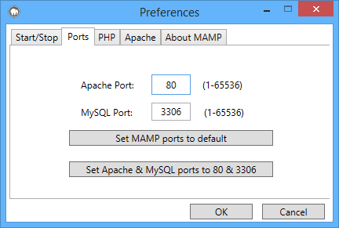
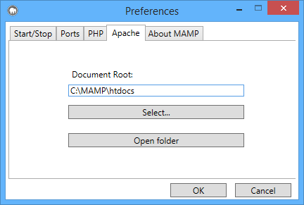

Öffnen Sie das Terminal und schreiben folgenden Befehl:C:\MAMP\bin\mysql\bin\mysqladmin -u root -p password -u root -p password <NEUESKENNWORT>
Anstelle von <NEUESKENNWORT> müssen Sie das gewünschte Kennwort eingeben.
Bedenken Sie aber,
dass dannach auch das Kennwort für phpMyAdmin und andere Skripte, welche unter MAMP laufen, geändert werden muss. Das Kennwort für phpMyAdmin kann in der Datei
C:\MAMP\bin\phpMyAdmin\config.inc.php geändert werden.
Sie können die Ports im Einstellungsdialog ändern:

In der Standardeinstellung sollten PHP- und HTML-Seiten in den Ordner htdocs, welcher sich im Ordner C:\MAMP\htdocs\ befindet, kopiert werden. Dieser Ordner wird auch "Document Root" genannt. Den Pfad für den Dokument Root können Sie jederzeit im Programm MAMP unter Einstellungen ändern:
